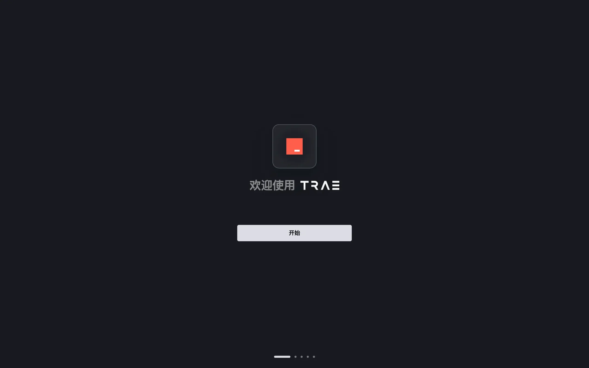
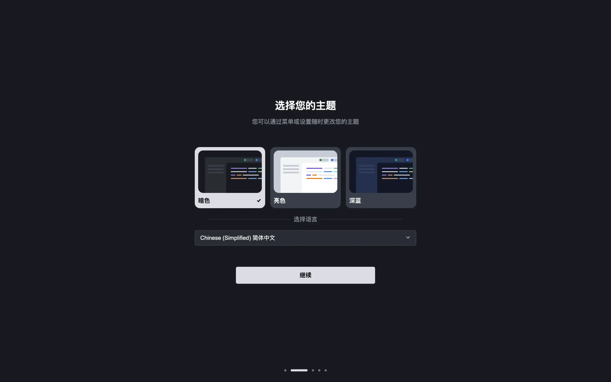
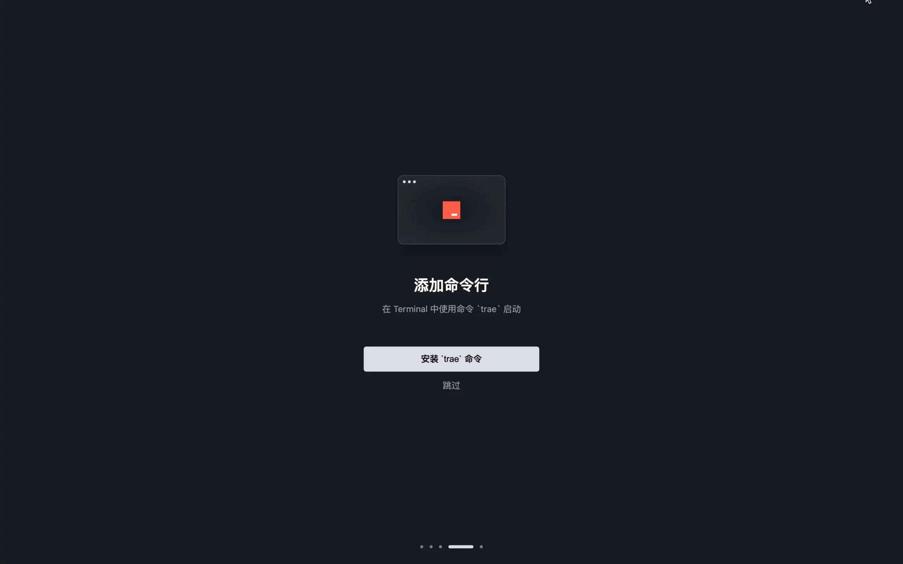
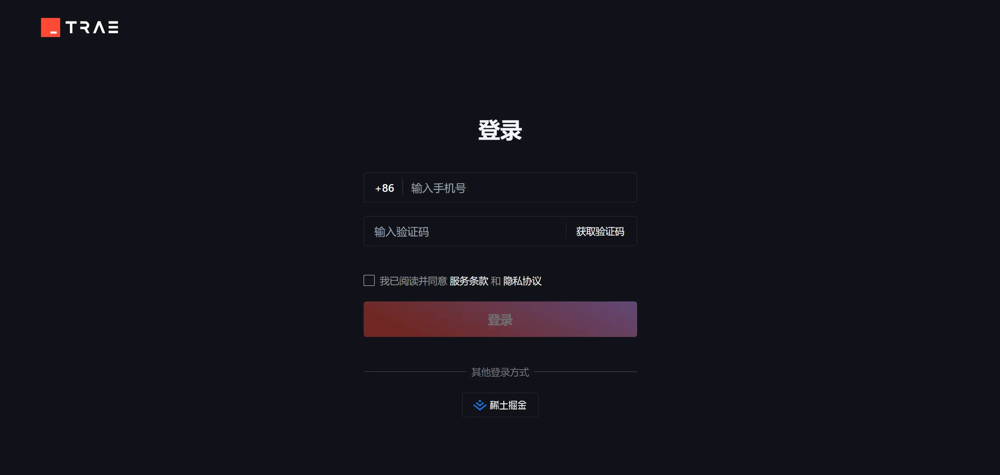
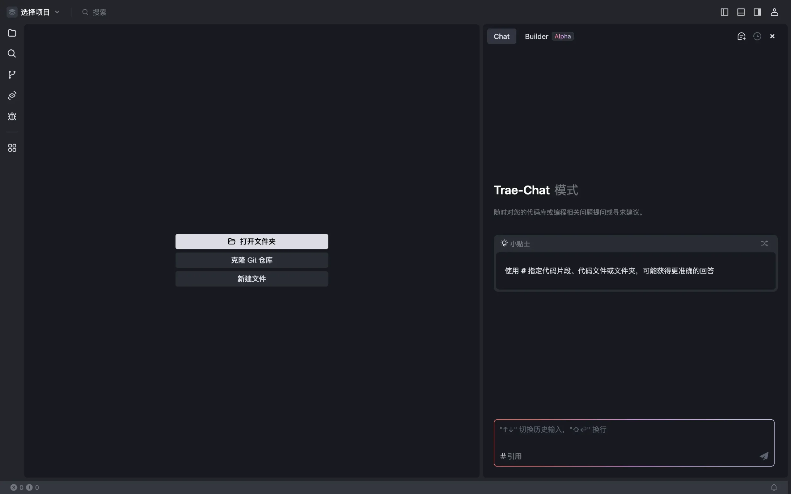

Trae（/treɪ/）は、ByteDanceが開発した開発者向けのAI駆動の統合開発環境（IDE）です。Cursorに似ており、中国語に対応し、ClaudeとGPT-4oモデルを統合しています。現在は無料です。
TraeはAIと深く統合され、スマートなQ&A、コード自動補完、およびAgentベースのAI自動プログラミング機能を提供します。
公式サイトは自動的にあなたのオペレーティングシステムを認識し、対応するバージョンを推奨します。手動で選択することもできます：
| オペレーティングシステム | ダウンロードバージョン |
|---|---|
| Windows | .exeインストールパッケージ |
| macOS（Intel） | .dmgインストールパッケージ |
| macOS（Apple Silicon） | .dmgARMバージョン |
一、Traeのインストール
アクセス Trae公式サイト 、デフォルトでは、ダウンロードボタンが自動的に私たちのコンピューターのシステムに一致します。自分のコンピューターのオペレーティングシステムに適したTraeインストールパッケージを見つけてダウンロードすることもできます。

ダウンロードが完了したら、インストールパッケージをダブルクリックして、表示される手順に従ってTraeをコンピューターにインストールします。
二、起動と初期設定
インストール完了後、Traeを起動します。初回起動時には初期設定ページが表示されます。
「開始」ボタンをクリックして、初期設定フローに入ります。
テーマの選択：オプションはダーク、ライト、ディープブルーです。好みに応じてテーマカラーを選択してください。
表示言語の選択：オプションは簡体字中国語とEnglishです。慣れている言語を選択してください。

「続行」ボタンをクリックして、テーマと言語の選択を完了します。
三、設定のインポート
お使いのコンピューターにVS CodeまたはCursorがインストールされ設定されている場合、VS CodeまたはCursorから設定をインポートできます。
「VS Codeからインポート」または「Cursorからインポート」ボタンをクリックすると、システムは対応するIDEからプラグイン、IDE設定、ショートカットキー設定などの情報を取得し、ワンクリックでTraeにインポートします。他のIDEからTraeに迅速に切り替えるのに役立ちます。

四、コマンドラインのインストール
Trae関連のコマンドラインを追加すると、ターミナルでコマンドラインを使用してTrae関連の操作をより迅速に実行できます。
「traeコマンドをインストール」ボタンをクリックし、承認フローを完了します。インストールが完了すると、ターミナルで以下のコマンドを使用できます：
- 使用traeコマンドでTraeをすばやく起動します。
- 使用trae my-react-appコマンドでTraeでプロジェクトを開きます。

五、アカウントにログイン
携帯電話番号でTraeにログインします。ログイン完了後、TraeでAIサービスを利用できます。

六、使用開始
- 既存のプロジェクトを開くか、Gitリポジトリをクローン：ログインに成功すると、既存のプロジェクトを開いたり、Gitリポジトリをクローンしたりして、Traeを使って開発作業を開始できます。
- AIアシスタントを使用して新規プロジェクトを作成：

詳細は以下を参照：https://www.runoob.com/ai-agent/trae-quick-star.html